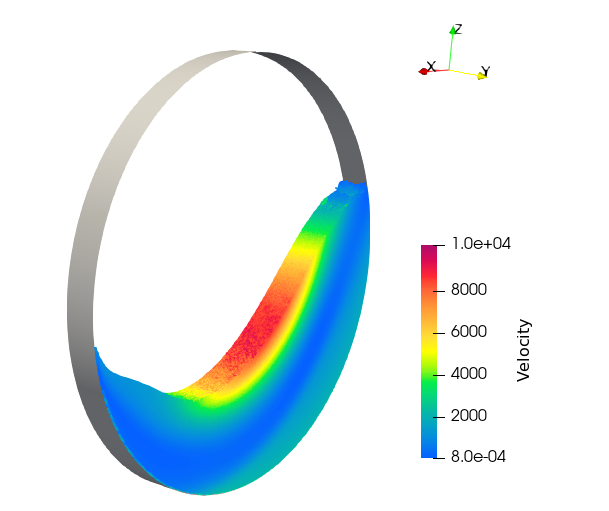
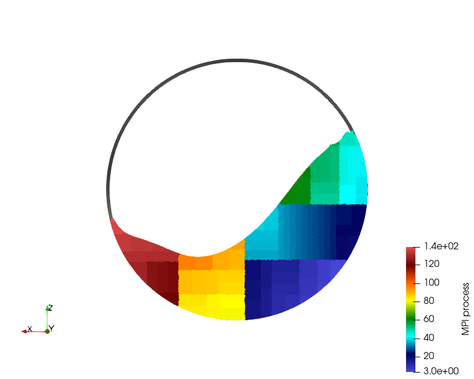
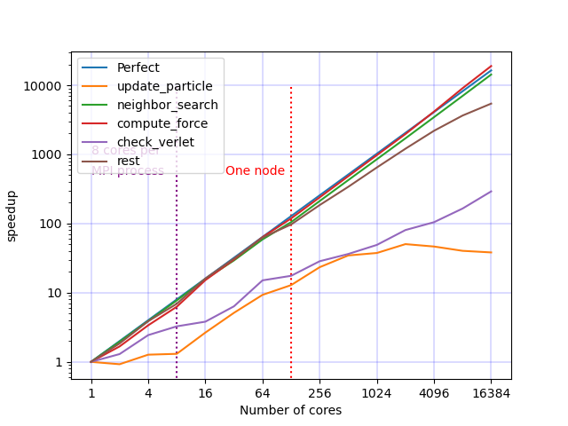
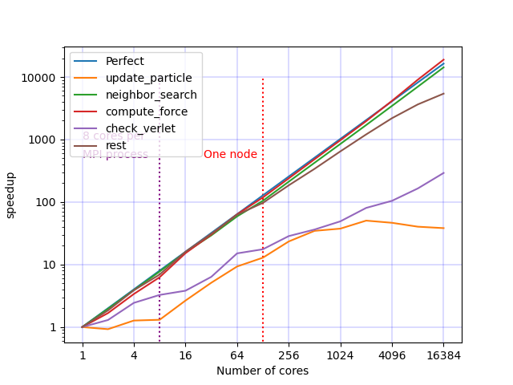
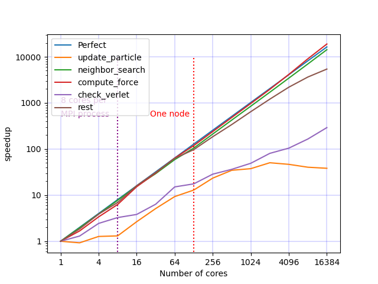

ExaDEM & ExaNBody
ExaNB Framework
1. ExaNBody: Framework for N-Body Simulations on HPC Platforms
2. Installing ExaNB
3. N-Body Background
4. Software stack of ExaNBody
5. Performance and portability
6. Algorithm Patterns
7. List of Plugins
8. ExaNBody Command Lines
9. Tutorials
10. ExaNBody Publications:
11. Example for rst usage (math, code etc)
ExDEM Variant
1. ExaDEM Software
2. Installation
3. Test cases
4. Polyhedron
5. Spheres
6. Fields
7. Force Field
8. Numerical Scheme
9. Drivers
10. I/O and Analysis
11. Parallelization
11.1. MPI Parallelization
11.1.1. Domain Decomposition
11.1.2. Cost Model
11.2. Thread Parallelization
11.3. GPU Support
11.4. Benchmarks
11.4.1. Rotating Drum (Sphere)
11.4.2. Polyhedra Into A Box
12. Tutorials
Using exaNBody applications on Adastra
1. Installing ExaNB and Your application on Adastra
Bibliography
Bibliography
ExaDEM & ExaNBody
11.
Parallelization
View page source
11.
Parallelization
11.1.
MPI Parallelization
11.1.1.
Domain Decomposition
11.1.2.
Cost Model
11.2.
Thread Parallelization
11.3.
GPU Support
11.4.
Benchmarks
11.4.1.
Rotating Drum (Sphere)
 

11.4.2.
Polyhedra Into A Box
 
